This guide explains how you can set up Paylocity Webhook Sync orchestration in Aquera Admin to receive and process all the user events received from the Paylocity application. Aquera sends this data to the target system, for example, an identity management system such as Okta.
The user events can be creation of a user, update the information of an existing user, or termination of a user. A webhook setup must be configured in the Paylocity system to send these user events to an endpoint URL provided by Aquera.
The following procedures are involved in the Paylocity webhook setup:
Make sure that the source application (Paylocity) and the target application are configured in Aquera Admin before starting the Paylocity Webhook Sync setup.
For details, refer to the corresponding application configuration guides provided by Aquera. For details on Paylocity application configuration, refer to the Paylocity Configuration Guide.
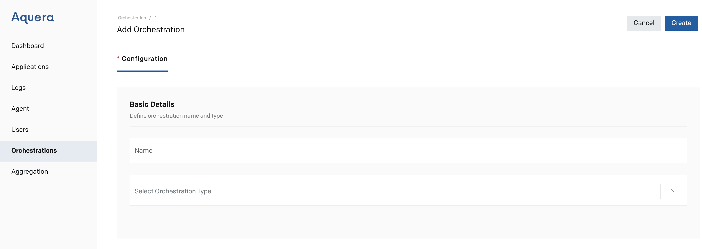
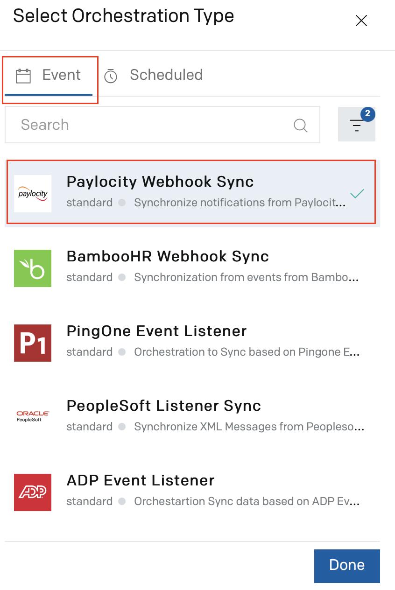
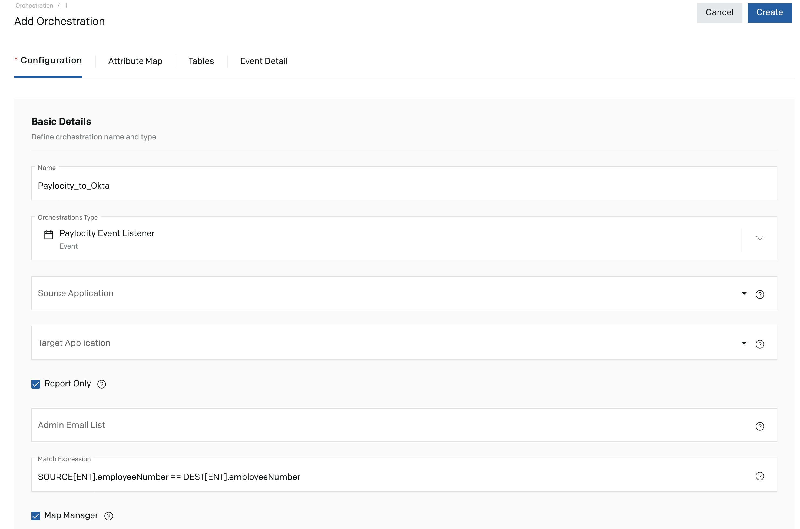
The settings to be done in each tab are explained in the following sections:This section details the settings in the Configuration tab:
| Field | Description |
| Basic Details | |
| Source Application |
Select the Paylocity application that you have added through the Applications page. The user events are received from the Paylocity application as part of the orchestration. 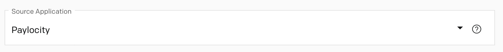 |
|
Target Application
|
Select the target application to which the user data must be updated as part of the orchestration. 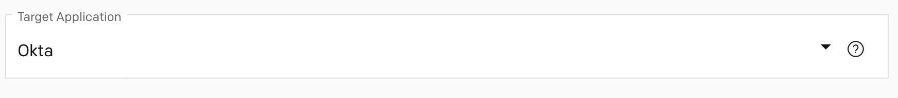 |
| Report Only |
Select this checkbox to generate a report that shows the data that would be changed in the target application, without actually making those changes. This can be selected for the first instance of orchestration to identify any issues. The report will be sent to the email IDs configured in the Admin Email List. You can clear this selection after verifying the report and confirming that the result is as expected. This checkbox is selected by default. |
| Admin Email List |
The administrative email addresses to which notifications and reports on this orchestration must be sent. Multiple email addresses must be separated by comma. 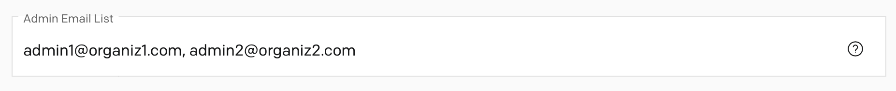 |
| Match Expression |
The expression, which has to be used to identify the target record that matches a source record. This expression can be given only if the target connector supports GET operation. 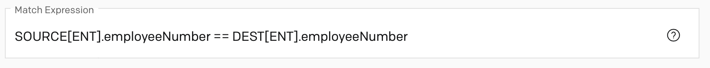 |
| Map Manager |
Select this checkbox to map users' managers from source to target. The manager attributes in the user objects are used for mapping. |
| Creation Email Details | |
| Send New User's Manager Email | Select this checkbox to send an e-mail notification to the manager when a new user is created in the target application as part of the orchestration. |
| Creation Distribution List | The email addresses to which an e-mail notification has to be sent when a new user is created in the target application as part of the orchestration. Multiple e-mail addresses must be separated by comma. |
| Creation Email Subject | The subject line to be used in the e-mail notification that will be sent when a user is created in the target application. For example, New Employee. |
| Creation Email Body |
The template that has to be used for the body of the notification e-mail, which will be sent when a new user is created in the target application. The target attributes can be included in the template to add any details of the created user in the e-mail body. For example: email : {{emails[work].value}} username : {{userName}} password : {{password}} |
| Deactivation Email Details | |
| Send Deactivated User's Manager Email | Select this checkbox to send an e-mail notification to the manager when a user is deactivated in the target application as part of the orchestration. |
| Deactivation Distribution List | The email addresses to which an e-mail notification has to be sent when a user is deactivated in the target application as part of the orchestration. Multiple e-mail addresses must be separated by comma. |
| Deactivation Email Subject | The subject line to be used in the e-mail notification that will be sent when a user is deactivated in the target application. For example, Deactivated Employee. |
| Deactivation Email Body |
The template that has to be used for the body of the notification e-mail, which will be sent when a user is deactivated in the target application. The target attributes can be included in the template to add any details of the deactivated user in the e-mail body. For example: email : {{emails[work].value}} username : {{userName}} |
| Advanced Details | |
| Enable Group Management |
Select this checkbox if the orchestration must support management of user groups in the target application. Refer to the Group Rules section to set the rules for managing group-related data. |
| Group Management Restriction List |
Enter the list of group names to which the group management rules must be effective. Multiple group names must be separated by a comma. If no groups are configured here, the group management rules are effective for all groups. If there are 8 groups in the target application and only 6 of those groups are configured here, the users existing in the 2 non-configured groups will be removed when the orchestration runs. |
| Phone Number Formatting |
The standard format to which the phone numbers of users must be converted during the orchestration process. The valid values are:
|
| Password Length | Enter the length of the password that has to be generated for new users. By default, the value is 12. |
The default mapping of SCIM attributes from Paylocity to target application is displayed on the page. The source attributes are listed on the left side and the target attributes on the right side of the page.
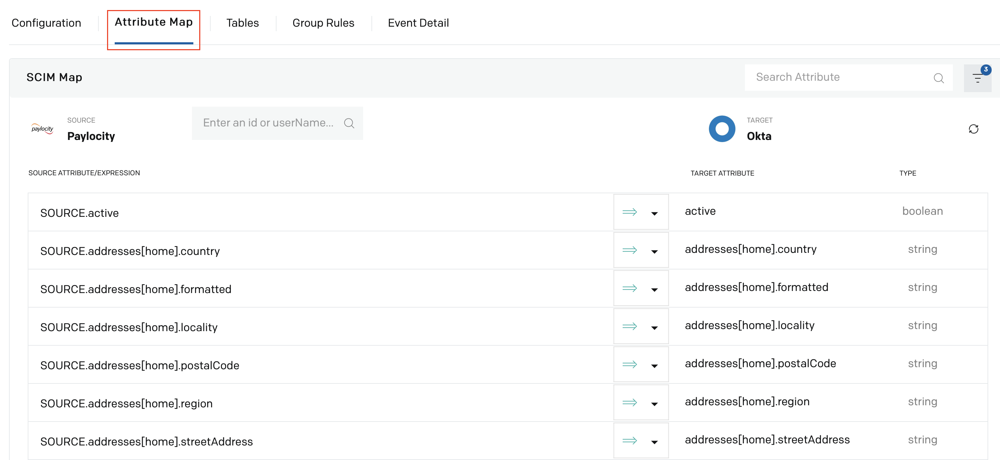
The mapping simplifies the process of executing Create, Update, and Delete operations, as the changes made to a source attribute will automatically be reflected in the mapped target attribute when the orchestration runs. The source attribute has to be edited in accordance with the target attribute.
The following actions can be performed in this tab, as per the requirements:
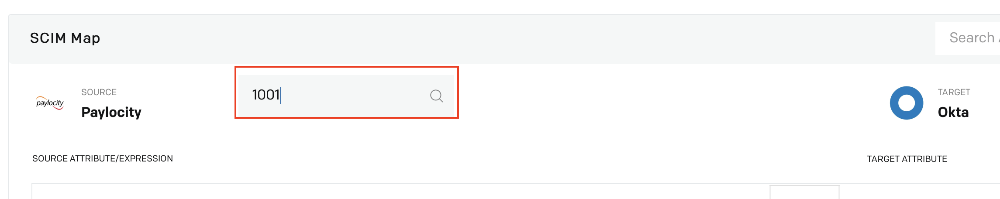
The user data is loaded corresponding to each source attribute. This can be done to ensure that the mapping is created in such a way that the values from the source are mapped to the right target SCIM attributes.
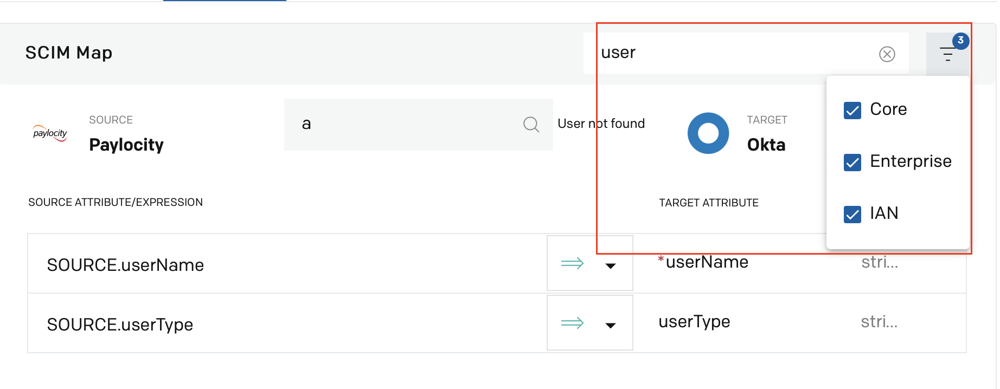
You can specify if the mapping of an attribute is to be done for create and update operations, for create operation only, or for update operation only. You can also choose not to map a source SCIM attribute at all.
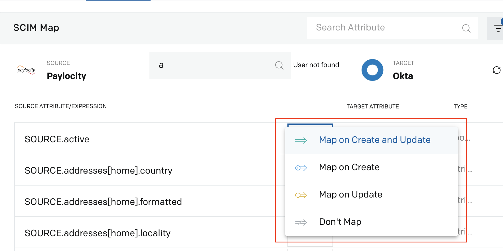
Tables can be used to create custom source attributes, and POST (sync) them to the target application. Tables are used when a source attribute is empty or a particular data is not sent from the source, and the user wants to update a value to the corresponding target attribute.
For example, if hire date of employees is not available in the source attributes and the user wants the hire date to be posted in the target application, you can add a table in the orchestration setup containing the list of the unique usernames and the corresponding hire dates.
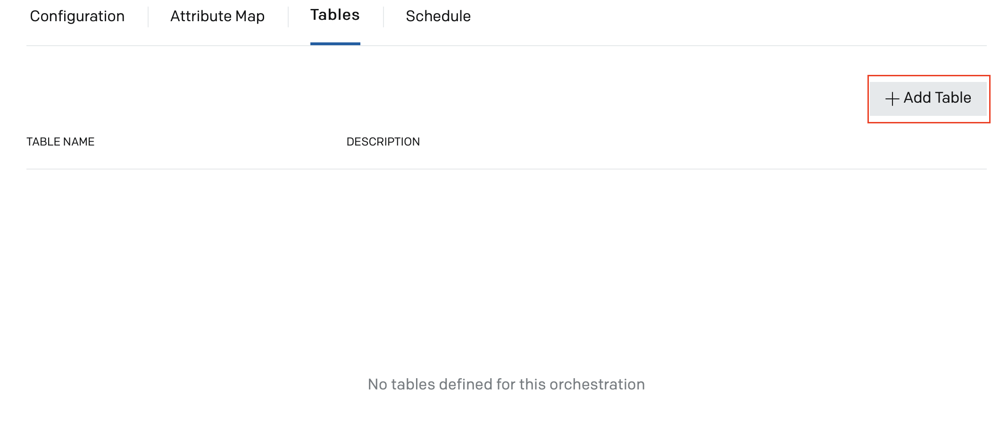
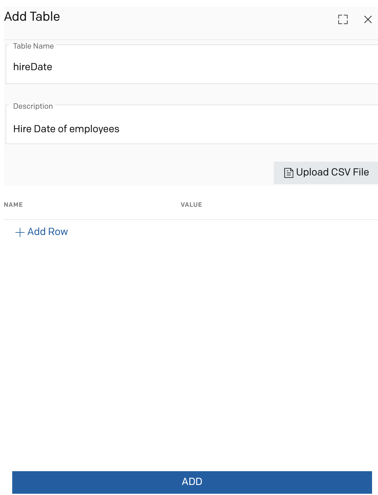
The table inputs can be entered either manually as rows or by uploading a CSV file.
In this scenario, we add a table entry by clicking Add Row. The hireDate table is created with the username entry as 12345 and the hire date value as 2020-09-09.
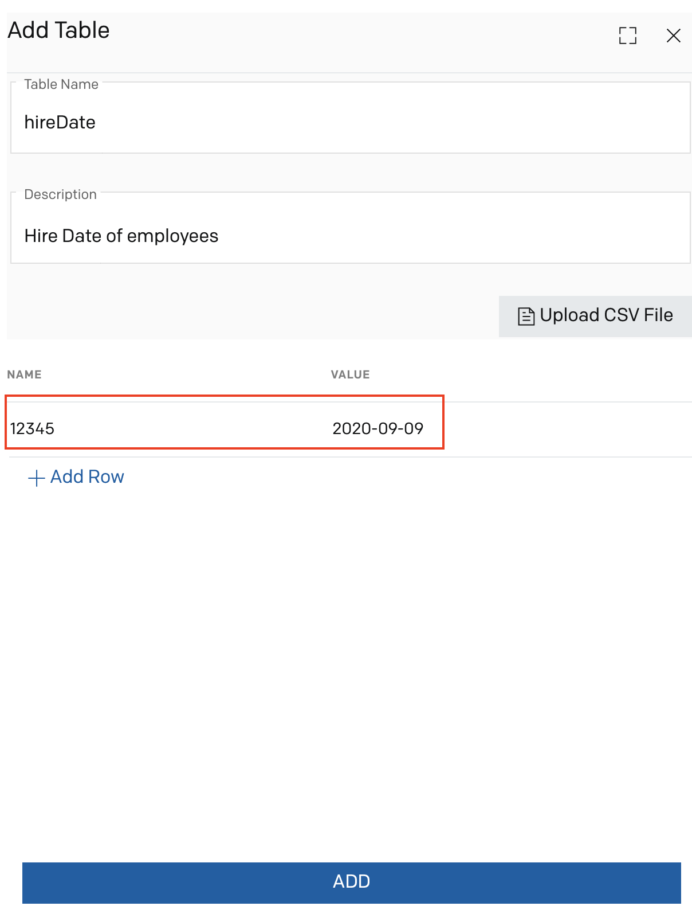
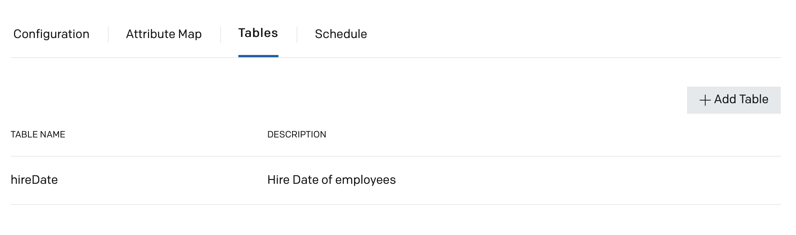
Now in the Attribute Map tab, the user wants to post the hire date value of the employee having username 12345 from the table to the target attribute [IAN].hireDate. In this case, the corresponding source attribute must be entered as TABLE.hireDate[SOURCE.userName].
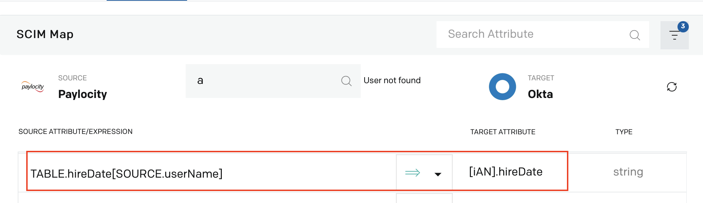
After you run the orchestration, the hire date will be assigned to the target application for the user 12345.
The Group Rules tab enables you to set the rules for maintaining the user groups in the webhook sync orchestration. To enable the group management feature, ensure that the Enable Group Management checkbox is enabled and the target application groups for which the rules must be effective are configured in the Configuration tab. Refer to the Configuration section for details.
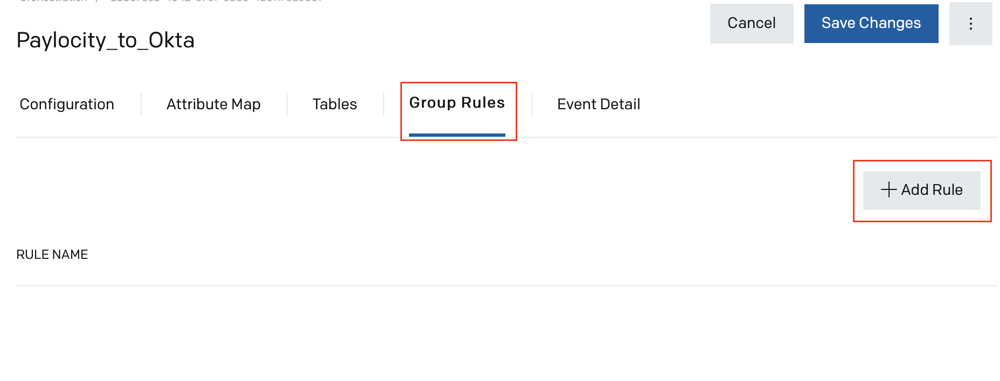
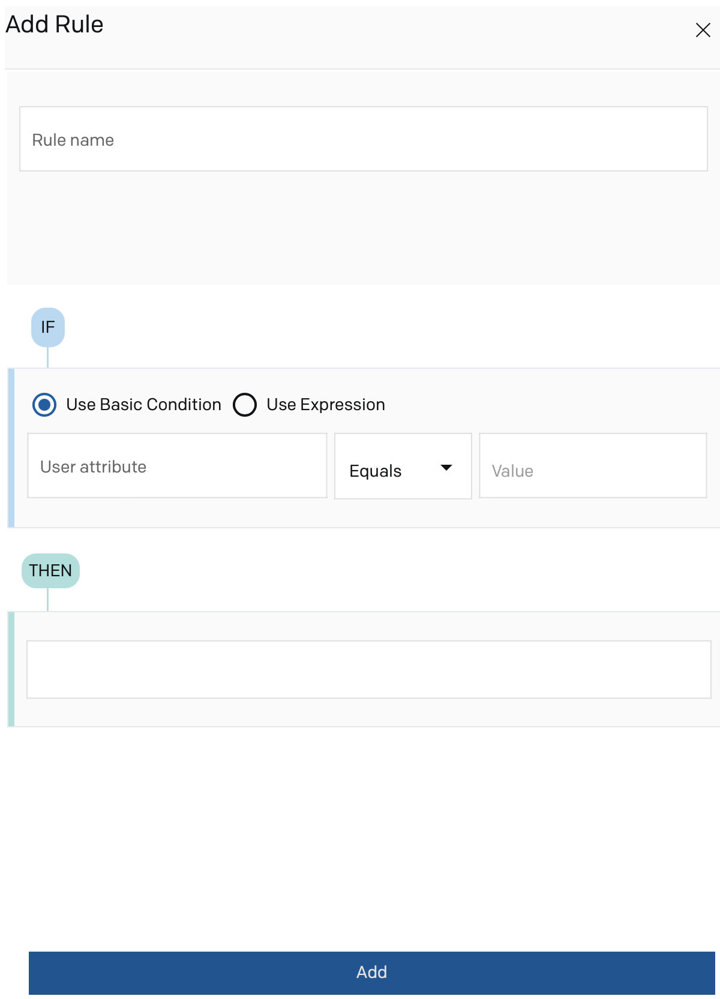
You can set the rule for group management using the basic conditions.
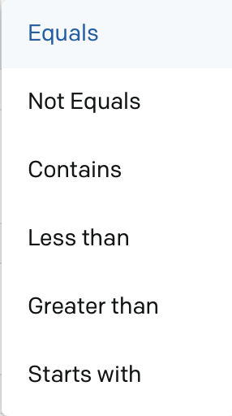
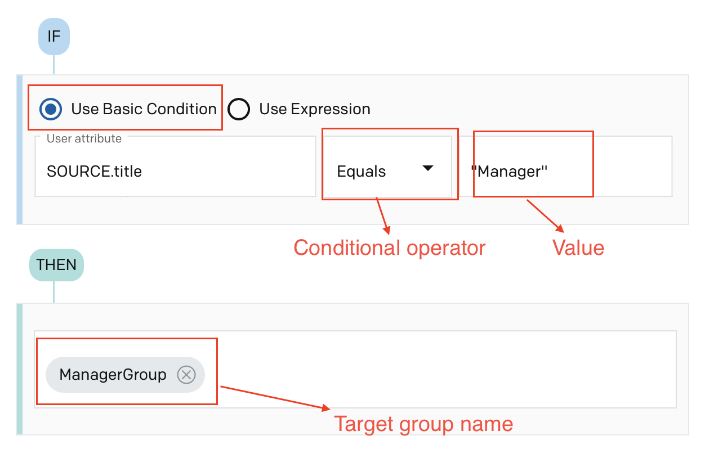
You need to write expressions using Javascript syntax and Aquera's script extension to set the rule.
The Event Detail tab displays the URL that will receive all events from Paylocity.
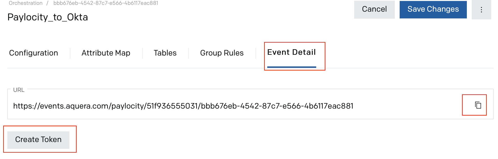
This URL must be copied and configured in the Webhooks section in Paylocity application. Refer to the Setting Up Webhooks in Paylocity section for details.
You can generate the token for authentication by clicking Create Token. A token is generated.
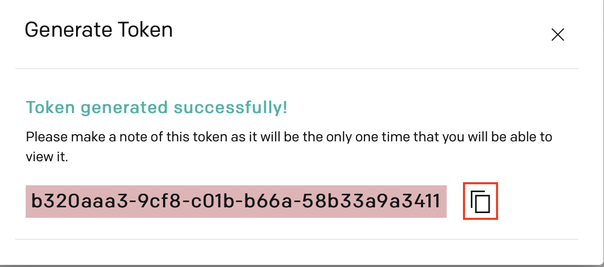
This token has to be appended as the key to the URL when you set up webhook in Paylocity. Refer to the Setting Up Webhooks in Paylocity section for details.
The Paylocity Webhook Sync orchestration setup is completed in Aquera Admin.